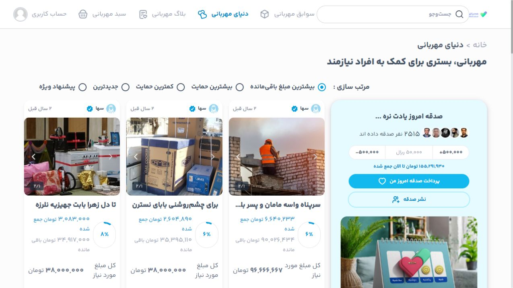
01 · 2022–2024
Client · Imam Khomeini Relief Foundation
Mehrabani
Research-led charity platform design for clearer support journeys.
Read case studyI’m an independent product designer who turns complex services into clear, useful experiences for the people who rely on them.
With 4+ years across product design, UX research, and responsive web, I move from messy context to practical flows, thoughtful interfaces, and prototypes teams can act on.
Good product design respects people’s time, context, and uncertainty. I make the next decision easier to understand.
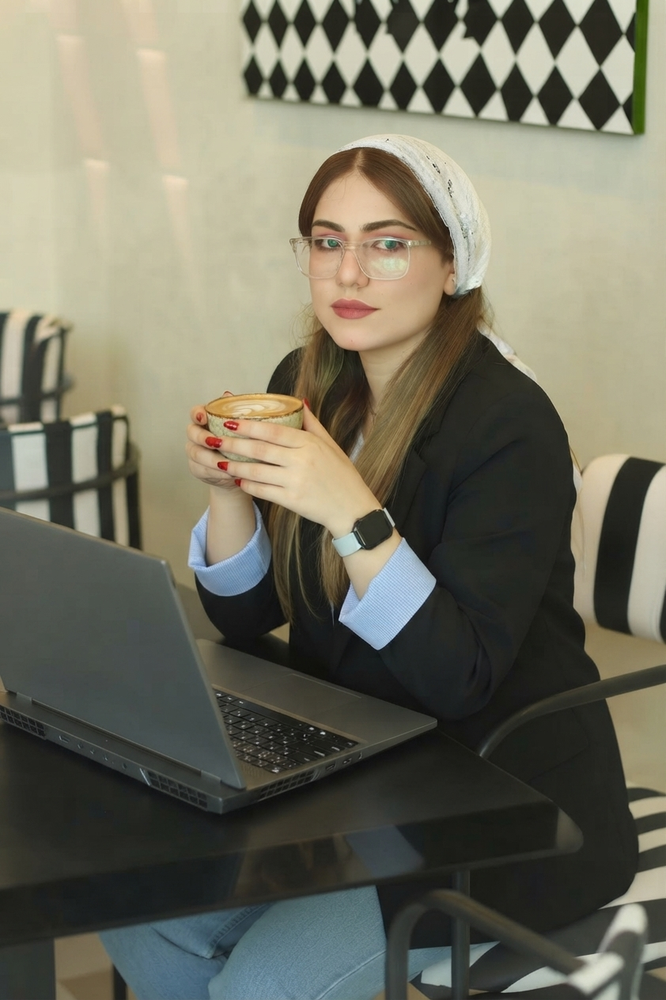
TOOLKIT

01 · 2022–2024
Client · Imam Khomeini Relief Foundation
Research-led charity platform design for clearer support journeys.
Read case study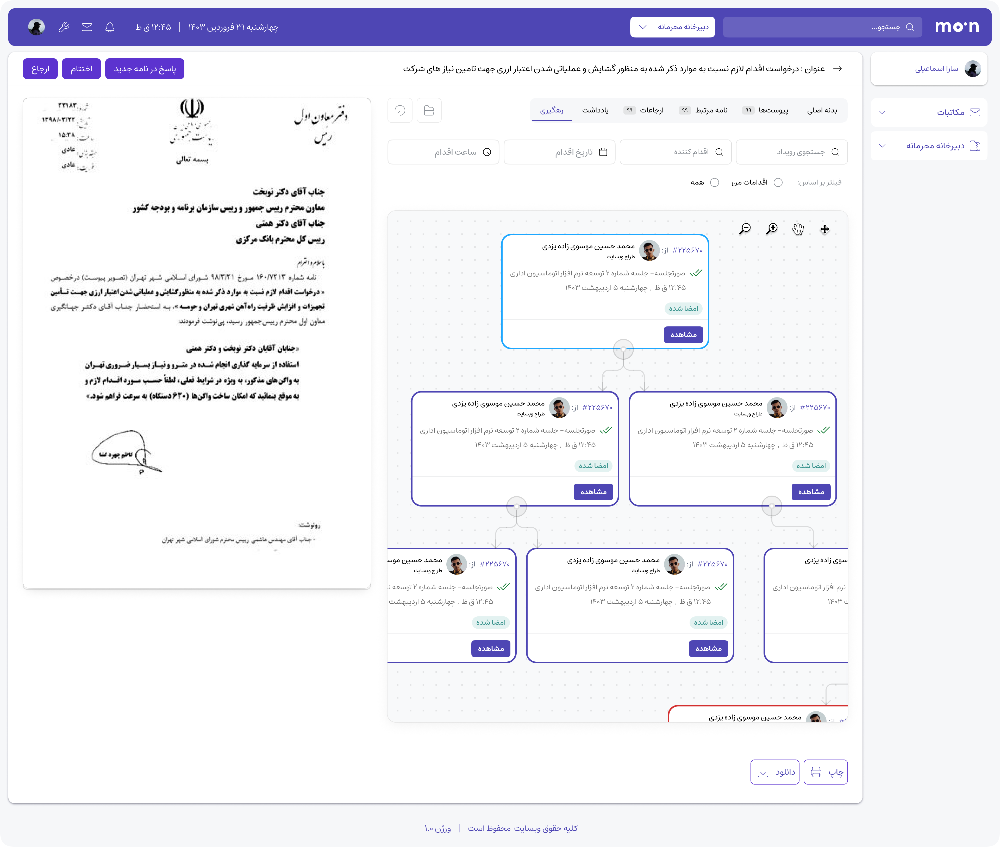
03 · 2023–2025
Employer · NovinParva
Simplifying enterprise correspondence into clear digital workflows.
Read case study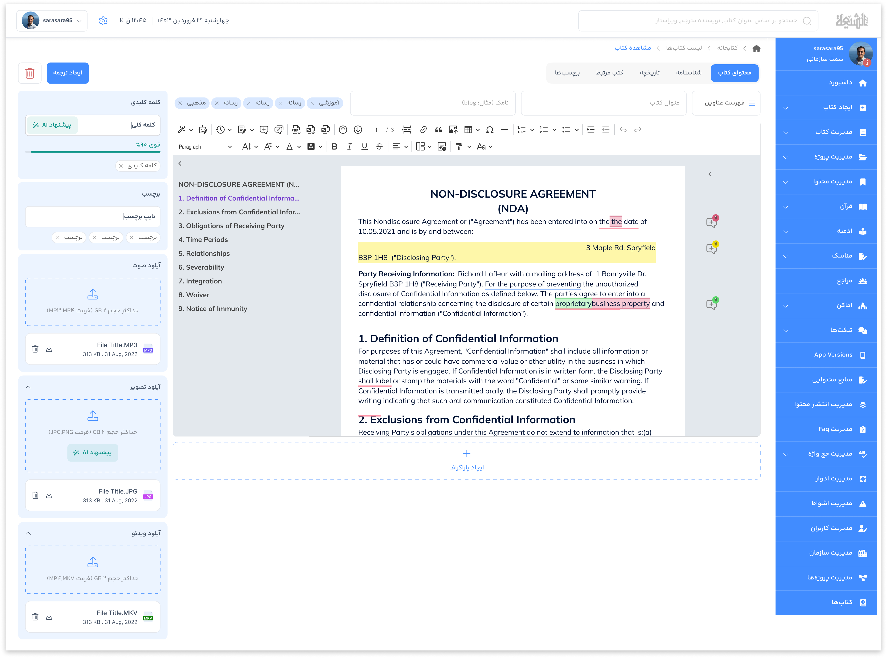
04 · 2024–2025
Employer · NovinParva
A responsive content platform for two existing applications.
Read case study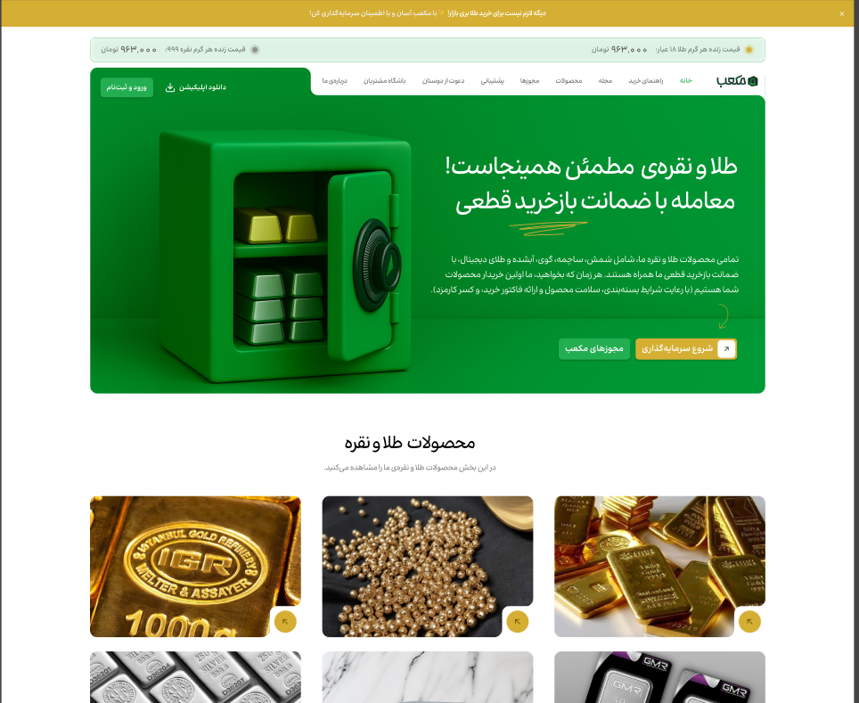
05 · 2025
Project · Client commission
End-to-end product design for digital and physical gold and silver.
Read case study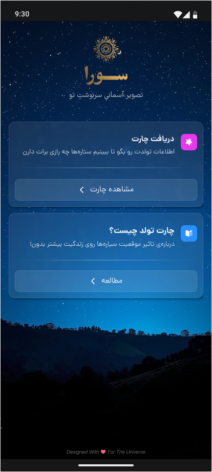
06 · 2025–PRESENT
Project · Independent concept
AI-assisted astrology readings for personality, daily life, and compatibility.
Read case study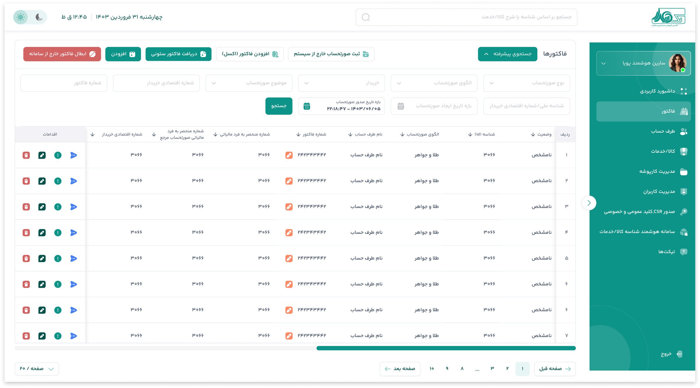
07 · 2-MONTH PROJECT
Product · Accounting & invoicing
Simplifying tax-invoice operations with responsive light and dark UI.
Read case study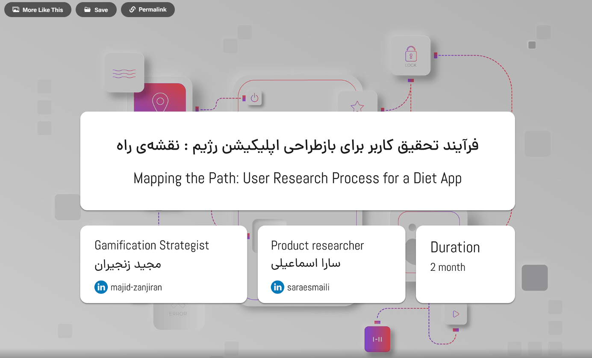
08 · 2-MONTH PROJECT
Product · Diet & health service
Turning research evidence into a clearer product roadmap.
Read case study03 / CASE STUDY
Commissioned by Imam Khomeini Relief Foundation and designed and developed with Aghigh Studio, Mehrabani is a digital charity platform connecting users and organizations around charitable aid.
THE CHALLENGE
Giving is often shaped by uncertainty. People need to know what they are supporting, how their contribution is used, and what happens next.
The platform also had to work for people receiving support and for teams managing credits, content, products, and logistics. The challenge was not simply designing a donation screen; it was creating clarity across an entire service ecosystem.
RESEARCH
The research covered 16 participants across four audience groups, with four people representing each persona.
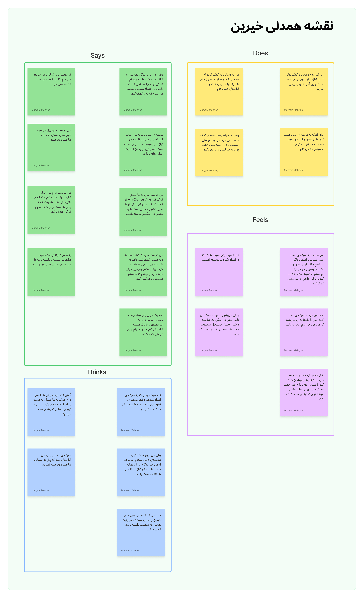
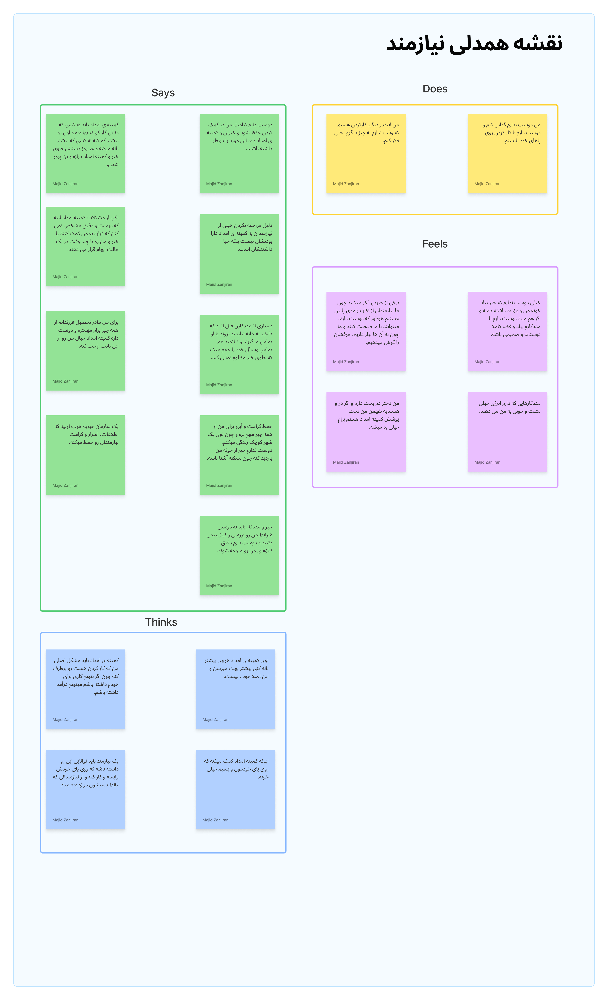
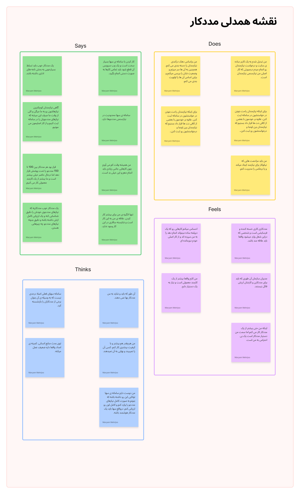
KEY INSIGHTS
Trust has to be felt throughout the journey: clear programs, understandable choices, visible next steps, and transparent support information.
Different audiences need distinct paths, but the experience must connect individual support with organizational operations.
A practical structure is essential when donations, credits, products, and logistics meet in one platform.
DESIGN DIRECTION
The design direction translated the research into focused user journeys for discovering aid programs, choosing a way to help, managing credits and donations, and supporting organizational workflows.
LANDING PAGE
I designed the Mehrabani landing page to introduce its purpose, explain support programs, and guide people toward meaningful action within the established visual identity.
Visit live landing pageREFLECTION
Mehrabani strengthened my ability to turn qualitative research into practical product decisions. It showed me how clarity in a small interaction can affect trust across an entire service.
03 / VISUAL ARCHIVE
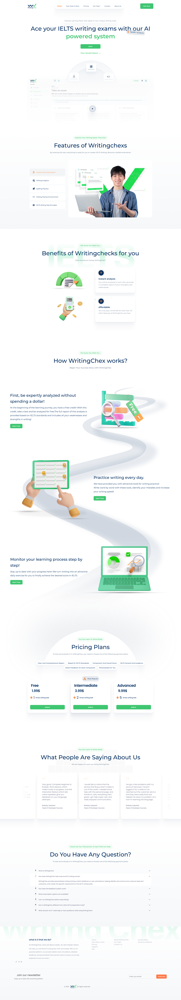
FIGMA / VISUAL PROJECT
Bilingual landing pages and feature screens for an AI-supported IELTS writing platform.
View visual project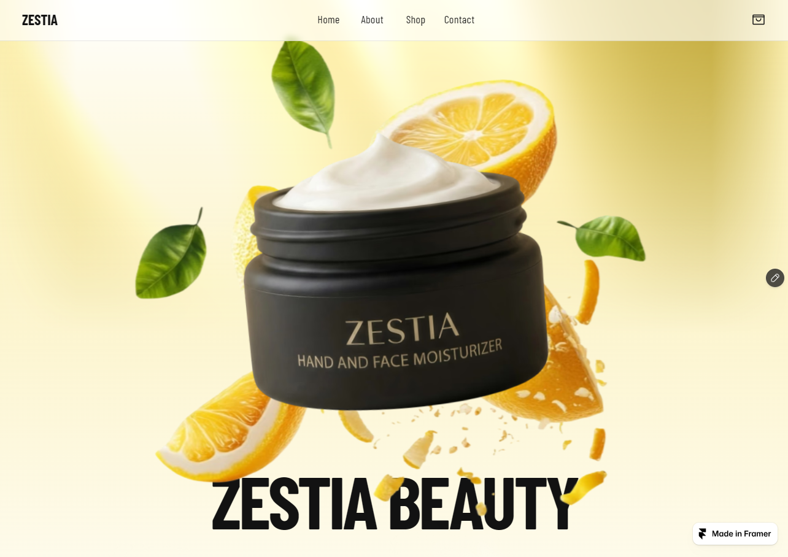
FRAMER / TEMPLATE
A responsive skincare-site template, shown with its published hero.
View template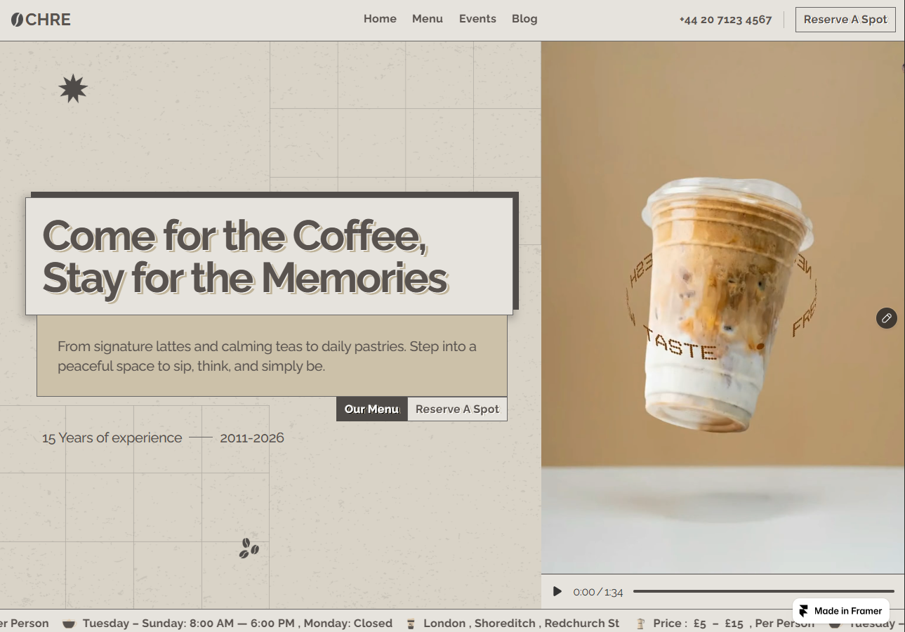
FRAMER / TEMPLATE
A warm, responsive coffee-shop template built for a polished first impression.
View template04 / PRODUCT DESIGN PROCESS
Clarify the business goal, user needs, existing constraints, and the problem worth solving.
Turn findings into a sitemap, focused scenarios, user flows, and a practical product direction.
Create wireframes, reusable components, responsive UI, and prototypes to test and refine the experience.
MY CAPABILITIES
My practice combines research, systems thinking, visual craft, and a practical AI-assisted workflow.
EXPERIENCE
DEC 2025 — PRESENT
Self-employed · Independent
Designing responsive Framer websites and visual product concepts. Built Sora, an AI-powered astrology and synastry concept, from early flows and content direction to an interactive prototype and visual system.
JUN 2023 — SEP 2025
NovinParva · Full-time
Designed a bilingual English/Arabic Hajj guide, a central CMS for multiple mobile applications, and an office-automation product. Delivered information architecture, user flows, interfaces, and interactive prototypes for complex administrative journeys.
MAR 2024 — JUN 2024
Kermani Health Group · Part-time / Contract
Conducted exploratory research for a health-services product through online surveys, competitor analysis, and affinity mapping, then translated qualitative findings into product recommendations.
SEP 2022 — MAY 2024
Aghigh Family · Full-time / On-site
Worked primarily on research for Mehrabani, a digital charity platform spanning content, logistics, credits, and profiles. My design contribution was the Mehrabani landing page; the visual identity and wider product surfaces were created with the team.
FEB 2022 — AUG 2022
Tank.ir
Developed foundations in interface design, user flows, wireframing, prototyping, and collaborative product-design practice.
EDUCATION
Bachelor’s Degree in Psychology · 2013 — 2017
02 / CONTACT
Feel free to reach out for collaborations, product inquiries, or just to say hello.